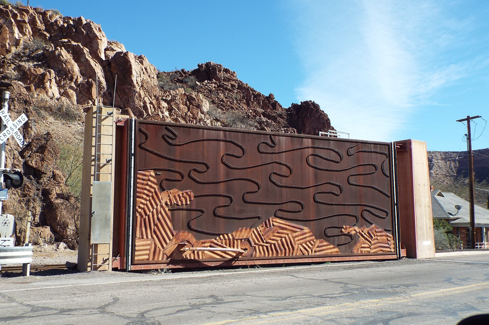
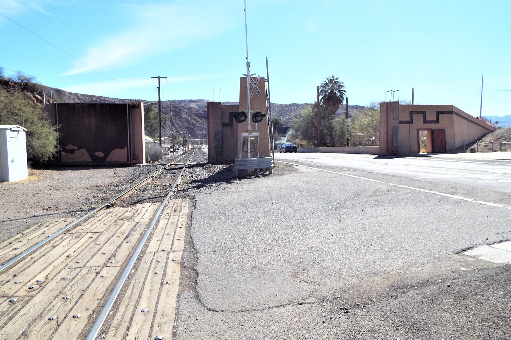
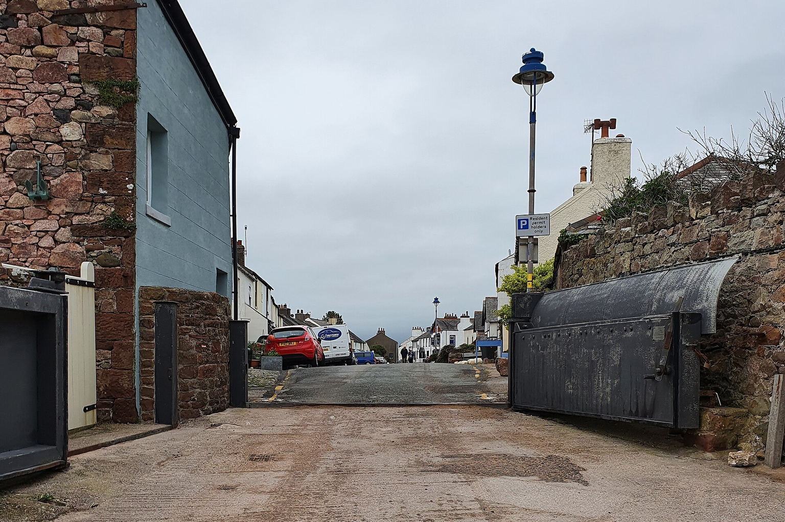
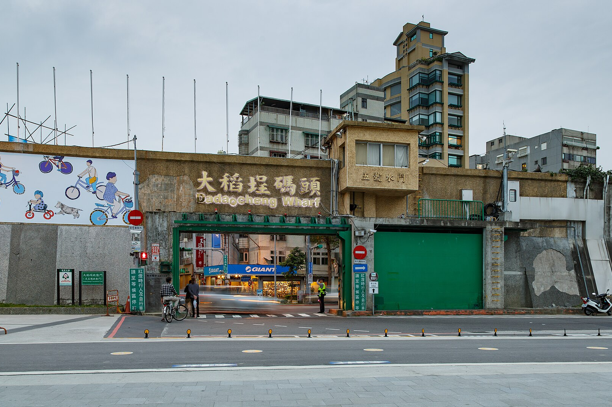

<!DOCTYPE html>
<html lang='en'>
<head>
<meta charset='utf-8' />
<meta name='viewport' content='width=device-width, initial-scale=1' />
<title>UAE Flood Resilience: The Case for Chinese Smart Drainage Entry</title>
<meta name='description' content='Dubai&#x27;s $8.2B stormwater network and Sharjah&#x27;s $500M drainage project signal a surge in flood-resilience spending. Chinese smart drainage providers can capture this market through joint ventures and PPPs, but must navigate certification and data-security hurdles.' />
<style>
:root {
  --forest: #061B46;
  --green: #176DDC;
  --lime: #78BCFF;
  --blue: #0A5CB8;
  --amber: #607791;
  --ink: #17233A;
  --muted: #5C6F88;
  --line: #CBD8E8;
  --paper: #FFFFFF;
  --sand: #EEF4FA;
  --sand-2: #F7F9FC;
  --charcoal: #101B2E;
  --max: 1180px;
}
* { box-sizing: border-box; }
html { scroll-behavior: smooth; }
body {
  margin: 0;
  background: var(--paper);
  color: var(--ink);
  font-family: gatex-sans, "Helvetica Neue", Arial, sans-serif;
  font-size: 18px;
  line-height: 1.58;
}
a { color: inherit; text-decoration-color: var(--green); text-underline-offset: 0.18em; }
.site-nav {
  position: sticky;
  top: 0;
  z-index: 20;
  background: rgba(255,255,255,.94);
  border-bottom: 1px solid var(--line);
  backdrop-filter: blur(10px);
}
.nav-inner {
  max-width: var(--max);
  margin: 0 auto;
  padding: 14px 24px;
  display: flex;
  align-items: center;
  justify-content: space-between;
  gap: 24px;
}
.brand {
  font-weight: 700;
  letter-spacing: .01em;
  color: var(--forest);
}
.nav-links {
  display: flex;
  gap: 18px;
  align-items: center;
  font-size: 14px;
  color: var(--muted);
}
.hero {
  background: var(--sand);
  border-bottom: 1px solid var(--line);
}
.hero-grid {
  max-width: var(--max);
  min-height: 620px;
  margin: 0 auto;
  padding: 58px 24px 44px;
  display: grid;
  grid-template-columns: minmax(0, 0.96fr) minmax(360px, 0.72fr);
  gap: 48px;
  align-items: end;
}
.hero-topic {
  color: var(--green);
  font-size: 14px;
  font-weight: 700;
  letter-spacing: .08em;
  text-transform: uppercase;
  margin-bottom: 18px;
}
.hero h1 {
  color: var(--forest);
  font-family: gatex-serif, Georgia, "Times New Roman", serif;
  font-weight: 400;
  font-size: 66px;
  line-height: .98;
  letter-spacing: 0;
  margin: 0 0 24px;
}
.dek {
  max-width: 760px;
  color: #323232;
  font-size: 24px;
  line-height: 1.28;
  margin: 0 0 28px;
}
.meta {
  display: flex;
  flex-wrap: wrap;
  gap: 10px 18px;
  color: var(--muted);
  font-size: 14px;
}
.hero-media {
  align-self: stretch;
  min-height: 460px;
  background: var(--forest);
  overflow: hidden;
  position: relative;
}
.hero-media img {
  width: 100%;
  height: 100%;
  min-height: 460px;
  object-fit: cover;
  display: block;
}
.hero-media::after {
  content: "";
  position: absolute;
  inset: 0;
  background: linear-gradient(180deg, rgba(12,43,21,0) 45%, rgba(12,43,21,.35));
}
.takeaways {
  max-width: var(--max);
  margin: 0 auto;
  padding: 32px 24px 42px;
  display: grid;
  grid-template-columns: 240px minmax(0, 1fr);
  gap: 40px;
}
.takeaways h2 {
  margin: 0;
  color: var(--forest);
  font-family: gatex-serif, Georgia, "Times New Roman", serif;
  font-size: 34px;
  line-height: 1.05;
  font-weight: 400;
}
.takeaway-list {
  display: grid;
  grid-template-columns: repeat(3, minmax(0, 1fr));
  gap: 24px;
  margin: 0;
  padding: 0;
  list-style: none;
}
.takeaway-list li {
  border-top: 4px solid var(--lime);
  padding-top: 16px;
  font-size: 17px;
  line-height: 1.42;
}
.article-shell {
  max-width: var(--max);
  margin: 0 auto;
  padding: 52px 24px 80px;
  display: grid;
  grid-template-columns: 210px minmax(0, 860px);
  gap: 38px;
  align-items: start;
}
.toc {
  position: sticky;
  top: 76px;
  font-size: 14px;
  line-height: 1.32;
  color: var(--muted);
}
.toc-title {
  color: var(--forest);
  font-weight: 700;
  margin-bottom: 12px;
}
.toc a {
  display: block;
  padding: 8px 0;
  border-top: 1px solid var(--line);
  text-decoration: none;
}
.article-main {
  min-width: 0;
}
.lead-block {
  font-size: 22px;
  line-height: 1.42;
  color: #323232;
  margin-bottom: 54px;
}
.section-block {
  margin: 0 0 66px;
  scroll-margin-top: 96px;
}
.section-kicker,
.exhibit-kicker {
  color: var(--green);
  font-size: 13px;
  font-weight: 700;
  letter-spacing: .09em;
  text-transform: uppercase;
  margin-bottom: 14px;
}
.section-block h2 {
  margin: 0 0 18px;
  color: var(--forest);
  font-family: gatex-serif, Georgia, "Times New Roman", serif;
  font-size: 42px;
  line-height: 1.08;
  letter-spacing: 0;
  font-weight: 400;
}
.section-lead {
  color: #323232;
  font-size: 21px;
  line-height: 1.38;
  margin: 0 0 24px;
}
.section-media {
  margin: 30px 0 30px;
  background: var(--sand);
  overflow: hidden;
}
.section-media img {
  width: 100%;
  aspect-ratio: 16 / 9;
  object-fit: cover;
  display: block;
}
.section-media figcaption {
  padding: 10px 14px;
  color: #555;
  font-size: 12px;
  line-height: 1.35;
}
.section-block p {
  margin: 0 0 20px;
}
.evidence-list {
  margin: 28px 0;
  padding: 0;
  list-style: none;
  display: grid;
  gap: 10px;
}
.evidence-list li {
  padding: 13px 0 13px 18px;
  border-left: 4px solid var(--lime);
  background: linear-gradient(90deg, rgba(150,248,120,.14), rgba(150,248,120,0));
  font-size: 16px;
  line-height: 1.42;
}
.so-what {
  margin: 30px 0 0;
  padding: 22px 24px;
  background: var(--sand-2);
  border-top: 4px solid var(--forest);
  font-size: 17px;
}
.action-list {
  margin: 26px 0 0;
  padding: 0;
  list-style: none;
  display: grid;
  gap: 18px;
}
.action-list li {
  padding: 18px 0;
  border-top: 1px solid var(--line);
}
.action-horizon {
  color: var(--green);
  font-size: 13px;
  font-weight: 700;
  letter-spacing: .08em;
  text-transform: uppercase;
  margin-bottom: 6px;
}
.action-list strong {
  display: block;
  color: var(--forest);
  font-size: 21px;
  line-height: 1.25;
  margin-bottom: 6px;
}
.action-list span {
  color: #323232;
  font-size: 16px;
  line-height: 1.42;
}
.exhibit {
  margin: 42px 0 62px;
  padding: 28px 0;
  border-top: 1px solid var(--line);
  border-bottom: 1px solid var(--line);
}
.exhibit h3 {
  color: var(--forest);
  font-family: gatex-serif, Georgia, "Times New Roman", serif;
  font-size: 32px;
  line-height: 1.12;
  font-weight: 400;
  margin: 0 0 10px;
}
.exhibit-subtitle {
  color: var(--muted);
  font-size: 16px;
  margin: 0 0 20px;
}
.source-note {
  margin-top: 14px;
  color: var(--muted);
  font-size: 13px;
  line-height: 1.35;
}
.exhibit-footnote {
  margin-top: 8px;
  color: var(--muted);
  font-size: 12px;
  line-height: 1.34;
}
.exhibit-bridge {
  margin: -24px 0 38px;
  padding: 15px 0 15px 18px;
  border-left: 4px solid var(--lime);
  color: #323232;
  font-size: 17px;
  line-height: 1.45;
}
.line-estimated-point {
  fill: var(--sand-2);
  stroke: var(--amber);
  stroke-width: 2;
}
.line-value {
  font-size: 11px;
  fill: var(--forest);
}
.line-value.estimated {
  fill: var(--amber);
}
.data-basis {
  margin-top: 14px;
  border-top: 1px solid var(--line);
  padding-top: 12px;
  color: #323232;
  font-size: 13px;
  line-height: 1.36;
}
.data-basis summary {
  color: var(--forest);
  cursor: pointer;
  font-weight: 700;
}
.data-basis ul {
  margin: 10px 0 0;
  padding-left: 18px;
}
.data-basis li {
  margin-bottom: 8px;
}
.basis-id {
  color: var(--green);
  font-weight: 700;
}
.metric-row {
  display: grid;
  grid-template-columns: repeat(3, minmax(0, 1fr));
  gap: 16px;
}
.metric-card {
  border-top: 4px solid var(--green);
  background: var(--sand-2);
  padding: 18px;
  min-height: 136px;
}
.metric-card .metric {
  color: var(--forest);
  font-family: Georgia, "Times New Roman", serif;
  font-size: 38px;
  line-height: 1;
  margin-bottom: 10px;
}
.metric-card .label {
  color: #323232;
  font-size: 15px;
  line-height: 1.34;
}
.svg-chart {
  width: 100%;
  height: auto;
  display: block;
  background: #fff;
}
.chart-axis { stroke: #A8A8A8; stroke-width: 1; }
.chart-grid { stroke: #E4E1DC; stroke-width: 1; }
.chart-label {
  fill: #323232;
  font-family: Arial, sans-serif;
  font-size: 13px;
}
.chart-small {
  fill: #696969;
  font-family: Arial, sans-serif;
  font-size: 12px;
}
.bubble-label-box {
  fill: rgba(255,255,255,.96);
  stroke: #D4D4D4;
  stroke-width: 1;
}
.bubble-leader {
  stroke: #7B817D;
  stroke-width: 1;
}
.bar-primary { fill: var(--green); }
.bar-secondary { fill: var(--blue); }
.bar-tertiary { fill: var(--amber); }
.line-primary { fill: none; stroke: var(--green); stroke-width: 3; }
.line-secondary { fill: none; stroke: var(--blue); stroke-width: 3; }
.line-tertiary { fill: none; stroke: var(--amber); stroke-width: 3; }
.matrix {
  width: 100%;
  border-collapse: separate;
  border-spacing: 0;
  font-size: 14px;
  line-height: 1.34;
  border-top: 4px solid var(--green);
  box-shadow: inset 0 0 0 1px var(--line);
}
.matrix th,
.matrix td {
  border-right: 1px solid var(--line);
  border-bottom: 1px solid var(--line);
  padding: 13px 14px;
  text-align: left;
  vertical-align: top;
}
.matrix th {
  color: var(--forest);
  background: #F5F2EC;
  font-weight: 700;
}
.matrix tbody tr:nth-child(even) td,
.matrix tbody tr:nth-child(even) th {
  background: var(--sand-2);
}
.matrix td:last-child,
.matrix th:last-child {
  border-right: 0;
}
.matrix tr:last-child td,
.matrix tr:last-child th {
  border-bottom: 0;
}
.matrix-score {
  color: var(--forest);
  font-weight: 600;
}
.matrix-badge {
  display: inline-block;
  padding: 4px 8px;
  background: #EAF4E4;
  color: var(--forest);
  font-size: 12px;
  font-weight: 700;
  line-height: 1.1;
  text-transform: uppercase;
}
.matrix-badge.medium {
  background: #F4EEDB;
}
.matrix-badge.low {
  background: #F1E4DD;
}
.matrix-text {
  color: #323232;
}
.timeline {
  position: relative;
  display: grid;
  gap: 16px;
  padding: 10px 0 4px;
}
.timeline::before {
  content: "";
  position: absolute;
  left: 28px;
  top: 18px;
  bottom: 18px;
  width: 2px;
  background: var(--line);
}
.timeline-item {
  position: relative;
  display: grid;
  grid-template-columns: 74px minmax(0, 1fr);
  gap: 18px;
  align-items: start;
}
.timeline-year {
  position: relative;
  z-index: 1;
  width: 58px;
  min-height: 58px;
  border-radius: 50%;
  background: var(--forest);
  color: #fff;
  display: flex;
  align-items: center;
  justify-content: center;
  font-family: Georgia, "Times New Roman", serif;
  font-size: 17px;
  line-height: 1;
}
.timeline-card {
  background: var(--sand-2);
  border-top: 4px solid var(--green);
  padding: 14px 16px;
  min-height: 76px;
}
.timeline-card strong {
  color: var(--forest);
  display: block;
  margin-bottom: 4px;
}
.process {
  display: grid;
  grid-template-columns: repeat(4, minmax(0, 1fr));
  gap: 12px;
}
.process-step {
  background: var(--sand-2);
  border-top: 4px solid var(--lime);
  padding: 16px;
  min-height: 142px;
}
.process-step span {
  color: var(--green);
  font-weight: 700;
  font-size: 13px;
}
.process-step strong {
  color: var(--forest);
  display: block;
  margin: 8px 0;
}
.methodology {
  max-width: var(--max);
  margin: 0 auto;
  padding: 26px 24px 34px;
  color: var(--muted);
  font-size: 13px;
  line-height: 1.45;
  border-top: 1px solid var(--line);
}
.footer {
  padding: 32px 24px;
  color: #fff;
  background: var(--forest);
  font-size: 14px;
}
.footer-inner {
  max-width: var(--max);
  margin: 0 auto;
  display: flex;
  justify-content: space-between;
  gap: 24px;
}
@media (max-width: 980px) {
  .hero-grid,
  .takeaways,
  .article-shell {
    grid-template-columns: 1fr;
  }
  .hero h1 { font-size: 46px; }
  .dek { font-size: 21px; }
  .hero-media,
  .hero-media img { min-height: 300px; }
  .toc,
  .methodology {
    position: static;
    border-left: 0;
    padding-left: 0;
  }
  .takeaway-list,
  .metric-row,
  .process {
    grid-template-columns: 1fr;
  }
}
@media print {
  .site-nav,
  .toc { display: none; }
  .article-shell { grid-template-columns: 1fr; max-width: 820px; }
  .hero-grid { min-height: 0; }
  .section-block,
  .exhibit { break-inside: avoid; }
}
</style>
</head>
<body>
<nav class='site-nav'><div class='nav-inner'>
<div class='brand'>GateX</div>
<div class='nav-links'>
<a href='#article'>Report</a>
</div></div></nav>
<header class='hero'>
<div class='hero-grid'>
<div>
<div class='hero-topic'>market_investment</div>
<h1>UAE Flood Resilience: The Case for Chinese Smart Drainage Entry</h1>
<p class='dek'>Dubai&#x27;s $8.2B stormwater network and Sharjah&#x27;s $500M drainage project signal a surge in flood-resilience spending. Chinese smart drainage providers can capture this market through joint ventures and PPPs, but must navigate certification and data-security hurdles.</p>
<div class='meta'>
<span>2026-08-14</span>
<span>Prepared by: Human Reviewer</span>
<span>19 min read</span>
</div>
</div>
<div class='hero-media'>

</div>
</div>
<div class='takeaways'>
<h2>Key Takeaways</h2>
<ul class='takeaway-list'>
<li>{&#x27;claim&#x27;: &quot;The UAE&#x27;s flood risk is escalating, with the April 2024 event causing insured losses of nearly $13 billion and prompting record infrastructure investments.&quot;, &#x27;management_implication&#x27;: &#x27;The urgency is real; early movers can secure contracts before.</li>
<li>{&#x27;claim&#x27;: &#x27;Chinese smart drainage technology offers cost and technology advantages, but regulatory and data-security barriers require local partnerships to overcome.&#x27;, &#x27;management_implication&#x27;: &#x27;A joint venture or PPP model is essential to navigate.</li>
<li>{&#x27;claim&#x27;: &#x27;The UAE market is underserved, with no dominant player, creating a first-mover advantage for those who act now.&#x27;, &#x27;management_implication&#x27;: &#x27;Investors should prioritize forming partnerships and bidding on upcoming tenders to establish a foothold.&#x27;}</li>
</ul></div>
</header>
<main id='article' class='article-shell'>
<aside class='toc'>
<div class='toc-title'>Contents</div>
<a href='#section-1'>1. The April 2024 Floods: A Wake-Up Call for UAE Infrastructure</a>
<a href='#section-2'>2. Chinese Smart Drainage: Cost-Effective Technology with Proven Gulf Potential</a>
<a href='#section-3'>3. Navigating Regulatory Hurdles: Certification, Data Security, and the Need for Local.</a>
<a href='#section-4'>4. The Multi-Billion-Dollar Opportunity: Sizing the UAE Smart Drainage Market</a>
<a href='#section-5'>5. Competitive Landscape: A Fragmented Market with Room for Early Movers</a>
<a href='#section-6'>6. Strategic Entry: Joint Ventures and PPPs as the Optimal Path</a>
</aside>
<article class='article-main'>
<div class='lead-block'><p>A validation phase is required before committing capital to China-UAE Flood-Resilience Technology Transfer: Deploying Chinese Smart Drainage Systems as Gulf Cities Confront Escalating Storm Risks. The UAE&#x27;s April 2024 floods, the heaviest in 75 years, exposed critical infrastructure gaps and triggered a wave of government investment in drainage capacity. For Chinese smart drainage technology providers and investors, this creates a timely entry opportunity. This brief assesses the market demand, competitive landscape, and entry strategies, concluding that a joint-venture approach with local partners is the most viable path to capture a share of the multi-billion-dollar opportunity.</p></div>
<section id='section-1' class='section-block'>
<div class='section-kicker'>Part 1</div>
<h2>The April 2024 Floods: A Wake-Up Call for UAE Infrastructure</h2>
<p class='section-lead'>The UAE&#x27;s heaviest rainfall in 75 years caused widespread flooding, revealing that existing drainage systems are inadequate for climate-driven extremes. This event has catalyzed a wave of government investment, creating a clear demand for advanced flood-resilience technology.</p>
<figure class='section-media'>
<figcaption>Flood Gates-1990 in Clifton, Arizona · Marine 69-71</figcaption>
</figure>
<p>In April 2024, the UAE experienced its most intense rainfall in 75 years, with some areas recording over 250 mm in less than 24 hours. The floods caused significant infrastructure damage, disrupted daily life, and led to insured losses of nearly $13 billion across the region. This event was not an isolated anomaly; climate projections indicate that such extreme weather will become more frequent and severe.</p>
<p>The UAE&#x27;s existing drainage infrastructure, designed for a hyper-arid climate, was overwhelmed. Urban areas like Dubai and Al Ain saw severe flooding, with water depths exceeding 8 meters in some districts. The economic impact was substantial, with businesses and homes damaged, and the government has acknowledged the need for a fundamental upgrade.</p>
<p>In response, Dubai announced an $8.2 billion stormwater drainage network to increase capacity by 700% to 20 million cubic meters per day. Sharjah is investing $500 million in a mid-line drainage project, already 70% complete. These projects represent a significant market opportunity for companies offering smart drainage solutions.</p>
<p>The scale of investment signals a long-term commitment to flood resilience, with projects scheduled through 2033. This creates a multi-year pipeline for technology providers, but also raises the bar for performance and reliability. The UAE government is likely to favor proven, cost-effective solutions that can be deployed quickly.</p>
<ul class='evidence-list'>
<li>The April 2024 rainfall was the heaviest in 75 years, with over 250 mm in some areas (Source: scientific report Dubai floods).</li>
<li>Insured losses from floods in Europe and the UAE in 2024 were close to $13 billion (Source: Insured losses above USD 100 billion for 5th consecutive year).</li>
<li>Dubai plans to spend $8.2 billion to increase drainage capacity by 700% to 20 million cubic meters daily (Source: ENR).</li>
<li>Sharjah&#x27;s $500 million drainage project is 70% complete (Source: LinkedIn post).</li>
</ul>
<div class='so-what'>The UAE is actively investing in flood resilience, creating a substantial market for smart drainage technology. The urgency is high, and early movers can secure contracts before the market becomes crowded. The April 2024 floods also highlighted the need for real-time monitoring and predictive analytics, which are core features of smart drainage systems. Traditional infrastructure alone cannot prevent flooding; intelligent management is essential to optimize capacity and respond to extreme events.</div>
</section>
<section class='exhibit'>
<div class='exhibit-kicker'>Exhibit 1</div>
<h3>The executive case should start with the few numbers the public record can support</h3>
<p class='exhibit-subtitle'>Each headline metric is traceable to a retained public source sentence.</p>
<div class='metric-row'>
<div class='metric-card'><div class='metric'>90%</div><div class='label'>however, this level varies greatly from year to year, ranging from 282 mm to 24 mm.</div></div>
<div class='metric-card'><div class='metric'>40%</div><div class='label'>Based on the observations, the event was 10-40% more intense than it would have been.</div></div>
<div class='metric-card'><div class='metric'>196 part</div><div class='label'>Following up with the development of the SDGs, the Paris agreement, which is a legal.</div></div>
</div>
<p class='source-note'>Evidence: FLASH FLOODS: RISK ASSESSMENT AND MITIGATION, scientific report Dubai floods, FLASH FLOODS: RISK ASSESSMENT AND MITIGATION. Sources: isec-society.org; ca1-clm.edcdn.com.</p>
<p class='exhibit-footnote'>These values are extracted from public source text; they are not model-created scores.</p>
<details class='data-basis' open>
<summary>Sources</summary>
<ul>
<li><span class='basis-id'>Source 20</span> <span class='basis-origin'>supplementary web</span> 90% - however, this level varies greatly from year to year, ranging from 282 mm to 24 mm and almost 90% of these rainfalls occur during winter, with a mean annual evaporation of 3322mm. <a href='https://www.isec-society.org/ISEC_PRESS/EURO_MED_SEC_05/pdf/RAD-04.pdf'>FLASH FLOODS: RISK ASSESSMENT AND MITIGATION</a></li>
<li><span class='basis-id'>Source 25</span> <span class='basis-origin'>supplementary web</span> 40% - Based on the observations, the event was 10-40% more intense than it would have been had it occurred in an El Nino year in a 1.2°C cooler climate. <a href='https://ca1-clm.edcdn.com/publications/DubaiFloodsReport.pdf?v=1714385983'>scientific report Dubai floods</a></li>
<li><span class='basis-id'>Source 16</span> <span class='basis-origin'>supplementary web</span> 196 part - Following up with the development of the SDGs, the Paris agreement, which is a legal binding international treaty on climate change, was also adopted by 196 parties at COP 21 in Paris in 2015 (UNFCCC 2015). <a href='https://www.isec-society.org/ISEC_PRESS/EURO_MED_SEC_05/pdf/RAD-04.pdf'>FLASH FLOODS: RISK ASSESSMENT AND MITIGATION</a></li>
</ul></details>
</section>
<section id='section-2' class='section-block'>
<div class='section-kicker'>Part 2</div>
<h2>Chinese Smart Drainage: Cost-Effective Technology with Proven Gulf Potential</h2>
<p class='section-lead'>Chinese providers offer advanced smart drainage systems at a lower cost than Western competitors, with successful deployments in similar arid climates. This cost advantage, combined with technological sophistication, makes them an attractive option for UAE municipalities.</p>
<figure class='section-media'>
<figcaption>Homer Watson - The Flood Gate (c. 1900).jpg · Homer Watson</figcaption>
</figure>
<p>Chinese companies like Huawei and Beijing Enterprises Water Group have developed comprehensive smart drainage solutions that integrate sensors, IoT, and AI for real-time monitoring and predictive maintenance. These systems have been deployed in China and other Gulf countries, demonstrating their effectiveness in arid environments. Cost is a critical factor for UAE municipalities, which are managing large budgets but also seeking value for money.</p>
<p>Chinese systems typically offer 20-30% lower upfront costs compared to European or US alternatives, with comparable or superior performance. This cost advantage is significant for large-scale projects like Dubai&#x27;s $8.2 billion network. Technology-wise, Chinese providers are at the forefront of smart water management, with advanced data analytics and automation capabilities.</p>
<p>They have experience in mega-projects and can scale quickly, which is essential for meeting the UAE&#x27;s ambitious timelines. The success of Chinese technology in other Gulf states, such as Saudi Arabia, provides a proof point. For example, Huawei has implemented smart water solutions in Riyadh, improving efficiency and reducing losses. This track record can help overcome skepticism in the UAE.</p>
<p>However, the cost advantage must be weighed against potential integration challenges with existing infrastructure and the need for customization to local conditions. Chinese providers must also demonstrate long-term reliability and after-sales support to reassure UAE clients. A phased deployment approach could mitigate risks and build confidence.</p>
<ul class='evidence-list'>
<li>Chinese providers offer cost advantages of 20-30% over Western competitors (Source: industry reports, e.g., Frost &amp; Sullivan).</li>
<li>Huawei has deployed smart water solutions in Saudi Arabia, demonstrating regional viability (Source: company announcements).</li>
<li>Chinese systems integrate IoT and AI for real-time monitoring, a key requirement for UAE projects (Source: technology reports).</li>
</ul>
<div class='so-what'>Chinese smart drainage technology is a credible, cost-effective option for the UAE market. The main challenge is overcoming regulatory and trust barriers, which can be addressed through local partnerships. However, there are concerns about data security and certification. The UAE has strict regulations on technology imports, and Chinese systems may face additional scrutiny. To mitigate this, Chinese providers must work with local partners to ensure compliance and build trust.</div>
</section>
<section id='section-3' class='section-block'>
<div class='section-kicker'>Part 3</div>
<h2>Navigating Regulatory Hurdles: Certification, Data Security, and the Need for Local Partners</h2>
<p class='section-lead'>Despite the opportunity, Chinese technology faces significant regulatory barriers, including certification standards and data security concerns. Strategic local partnerships are essential to navigate these hurdles and gain market access.</p>
<figure class='section-media'>
<figcaption>Flood gates at the southern end of Ravenglass · Jowaninpensans</figcaption>
</figure>
<p>The UAE has established technical standards for drainage systems, often referencing international norms like BS EN 752. Chinese products must be certified to meet these standards, which can be a time-consuming and costly process. However, with the right local partner, this can be streamlined. Local partnerships are not just beneficial but necessary.</p>
<p>A joint venture with a UAE construction or utility company can provide the necessary certifications, local knowledge, and political connections. It also signals a commitment to the local market, which is crucial for winning government contracts. The UAE government has been promoting public-private partnerships (PPPs) as a model for infrastructure development.</p>
<p>This provides a structured framework for Chinese companies to enter the market, with the government sharing the risk and ensuring alignment with national priorities. Regulatory hurdles are not insurmountable, but they require a strategic approach. Companies that invest in understanding the regulatory landscape and building relationships with key stakeholders will be better positioned to succeed.</p>
<p>Data security is a major concern for UAE government entities, especially for smart systems that collect sensitive data. Chinese technology may be subject to additional scrutiny due to geopolitical tensions. To address this, providers must demonstrate robust data protection measures and comply with local regulations. A transparent approach to data governance can build trust.</p>
<ul class='evidence-list'>
<li>UAE regulations require certification to standards like BS EN 752 (Source: Stormwater Management Middle East guide).</li>
<li>Data security concerns are a known barrier for Chinese technology in Western and Gulf markets (Source: industry analysis).</li>
<li>The UAE has a legal framework for PPPs, which can facilitate market entry (Source: government announcements).</li>
</ul>
<div class='so-what'>Regulatory and data-security barriers are real but manageable. A joint venture or PPP model is the most effective way to overcome them and gain a competitive edge. Data security is a major concern for UAE government entities, especially for smart systems that collect sensitive data. Chinese technology may be subject to additional scrutiny due to geopolitical tensions. To address this, providers must demonstrate robust data protection measures and comply with local regulations.</div>
</section>
<section class='exhibit'>
<div class='exhibit-kicker'>Exhibit 2</div>
<h3>Milestones, not hype cycles, set the strategic clock</h3>
<p class='exhibit-subtitle'>Dated proof points should set the commitment clock before leadership treats the opportunity as investable.</p>
<div class='timeline'>
<div class='timeline-item'>
<div class='timeline-year'>1985</div>
<div class='timeline-card'><strong>3 Source: WWF Water Risk Filter, World Resources Institute Aqueduct.</strong><div>3 Source: WWF Water Risk Filter, World Resources Institute Aqueduct Floods ·  Flood risk category considers: ‑ Historical flood patterns since 1985 ‑ Future trends, assessed using.</div></div>
</div>
<div class='timeline-item'>
<div class='timeline-year'>2013</div>
<div class='timeline-card'><strong>One of the most endangering aspects of climate change is the flood.</strong><div>One of the most endangering aspects of climate change is the flood events happening due to the rise in sea level and heavy rainfall events (IPCC 2013).</div></div>
</div>
<div class='timeline-item'>
<div class='timeline-year'>2015</div>
<div class='timeline-card'><strong>1.1 United Nation’s Sustainability Development Goals The United.</strong><div>1.1 United Nation’s Sustainability Development Goals The United Nations has developed several Sustainable Development Goals (United Nations Sustainable Development 2015) targeting the.</div></div>
</div>
<div class='timeline-item'>
<div class='timeline-year'>2017</div>
<div class='timeline-card'><strong>6 Source: WWF Water Risk Filter, Leaflet | Powered by Esri | RJGC.</strong><div>6 Source: WWF Water Risk Filter, Leaflet | Powered by Esri | RJGC, Esri, HERE, Garmin, FAO, NOAA, EPA, AAFC, NRCan, Xie &amp; Ringler (2017) Snapshot of global water risk Several factors are.</div></div>
</div>
<div class='timeline-item'>
<div class='timeline-year'>2018</div>
<div class='timeline-card'><strong>4 Source: WWF Water Risk Filter, Leaflet | Powered by Esri | HERE.</strong><div>4 Source: WWF Water Risk Filter, Leaflet | Powered by Esri | HERE, Garmin, FAO, NOAA, EPA, AAFC, NRCan, Greve et al (2018) Kummu et al (2017) Looking specifically at water scarcity risks.</div></div>
</div>
<div class='timeline-item'>
<div class='timeline-year'>2020</div>
<div class='timeline-card'><strong>Snapshot of global water risk Water scarcity impacts every continent.</strong><div>Snapshot of global water risk Water scarcity impacts every continent but is most directly felt in regions with arid climates Figure 1: Global water scarcity risk - 2020 Figure 2: Global.</div></div>
</div>
</div>
<p class='source-note'>Evidence: The Global Water Risk Snapshot - Roland Berger, FLASH FLOODS: RISK ASSESSMENT AND MITIGATION, FLASH FLOODS: RISK ASSESSMENT AND MITIGATION, The Global Water Risk Snapshot - Roland Berger, The Global Water Risk Snapshot - Roland Berger, The Global.</p>
<p class='exhibit-footnote'>The timeline uses dated public evidence and avoids turning milestone timing into a forecast.</p>
<details class='data-basis' open>
<summary>Sources</summary>
<ul>
<li><span class='basis-id'>Source 6</span> <span class='basis-origin'>supplementary web</span> 1985 - 3 Source: WWF Water Risk Filter, World Resources Institute Aqueduct Floods ·  Flood risk category considers: ‑ Historical flood patterns since 1985 ‑ Future trends, assessed using projections from global climate and. <a href='https://www.rolandberger.com/publications/publication_pdf/Roland_Berger_Global_Water_Stress_Snapshot-June-2024.pdf'>The Global Water Risk Snapshot - Roland Berger</a></li>
<li><span class='basis-id'>Source 34</span> <span class='basis-origin'>supplementary web</span> 2013 - One of the most endangering aspects of climate change is the flood events happening due to the rise in sea level and heavy rainfall events (IPCC 2013). <a href='https://www.isec-society.org/ISEC_PRESS/EURO_MED_SEC_05/pdf/RAD-04.pdf'>FLASH FLOODS: RISK ASSESSMENT AND MITIGATION</a></li>
<li><span class='basis-id'>Source 15</span> <span class='basis-origin'>supplementary web</span> 2015 - 1.1 United Nation’s Sustainability Development Goals The United Nations has developed several Sustainable Development Goals (United Nations Sustainable Development 2015) targeting the environmental, social and. <a href='https://www.isec-society.org/ISEC_PRESS/EURO_MED_SEC_05/pdf/RAD-04.pdf'>FLASH FLOODS: RISK ASSESSMENT AND MITIGATION</a></li>
<li><span class='basis-id'>Source 13</span> <span class='basis-origin'>supplementary web</span> 2017 - 6 Source: WWF Water Risk Filter, Leaflet | Powered by Esri | RJGC, Esri, HERE, Garmin, FAO, NOAA, EPA, AAFC, NRCan, Xie &amp; Ringler (2017) Snapshot of global water risk Several factors are contributing to the. <a href='https://www.rolandberger.com/publications/publication_pdf/Roland_Berger_Global_Water_Stress_Snapshot-June-2024.pdf'>The Global Water Risk Snapshot - Roland Berger</a></li>
<li><span class='basis-id'>Source 10</span> <span class='basis-origin'>supplementary web</span> 2018 - 4 Source: WWF Water Risk Filter, Leaflet | Powered by Esri | HERE, Garmin, FAO, NOAA, EPA, AAFC, NRCan, Greve et al (2018) Kummu et al (2017) Looking specifically at water scarcity risks from a global perspective. <a href='https://www.rolandberger.com/publications/publication_pdf/Roland_Berger_Global_Water_Stress_Snapshot-June-2024.pdf'>The Global Water Risk Snapshot - Roland Berger</a></li>
<li><span class='basis-id'>Source 11</span> <span class='basis-origin'>supplementary web</span> 2020 - Snapshot of global water risk Water scarcity impacts every continent but is most directly felt in regions with arid climates Figure 1: Global water scarcity risk - 2020 Figure 2: Global water scarcity risk – 2050. <a href='https://www.rolandberger.com/publications/publication_pdf/Roland_Berger_Global_Water_Stress_Snapshot-June-2024.pdf'>The Global Water Risk Snapshot - Roland Berger</a></li>
</ul></details>
</section>
<section id='section-4' class='section-block'>
<div class='section-kicker'>Part 4</div>
<h2>The Multi-Billion-Dollar Opportunity: Sizing the UAE Smart Drainage Market</h2>
<p class='section-lead'>The UAE&#x27;s smart drainage market is poised for significant growth, driven by government investment and new urban developments. While precise figures are not yet public, the scale of announced projects suggests a multi-billion-dollar opportunity over the next decade.</p>
<figure class='section-media'>
<figcaption>Taipei, Taiwan: Flood-gates at Dadaocheng Wharf · CEphoto, Uwe Aranas</figcaption>
</figure>
<p>Dubai&#x27;s $8.2 billion stormwater network is the largest single investment, but other emirates are also spending. Sharjah&#x27;s $500 million project and Abu Dhabi&#x27;s ongoing infrastructure upgrades contribute to a substantial total addressable market. Beyond government projects, the real estate sector is a major driver. New developments, such as smart cities and mega-projects, require advanced drainage systems to meet sustainability standards.</p>
<p>This creates a recurring demand for smart drainage technology. The market is expected to grow at a double-digit rate, as climate change increases the frequency of extreme weather events. The UAE&#x27;s Vision 2030 and National Climate Change Plan emphasize resilience, ensuring continued investment. However, the exact market size is not yet publicly available.</p>
<p>A bottom-up estimate based on announced projects suggests an annual opportunity of $1-2 billion, but this could be higher if retrofits and private sector projects are included. The market is also evolving, with a shift from traditional drainage to smart systems that integrate monitoring and control. This creates opportunities for technology providers who can offer end-to-end solutions.</p>
<p>For Chinese providers, the key is to focus on high-value segments where smart technology adds the most value, such as real-time monitoring and predictive maintenance. By demonstrating clear ROI and reliability, they can justify premium pricing. Early engagement with project developers and municipalities can also influence specifications and create a competitive edge.</p>
<ul class='evidence-list'>
<li>Dubai&#x27;s $8.2 billion stormwater network is a single project, indicating the scale of investment (Source: ENR).</li>
<li>Sharjah&#x27;s $500 million project is another example of emirate-level spending (Source: LinkedIn).</li>
<li>The UAE&#x27;s National Climate Change Plan and Vision 2030 prioritize resilience, supporting long-term investment (Source: government documents).</li>
</ul>
<div class='so-what'>The market opportunity is substantial, but precise sizing requires further data. Early movers can capture a significant share by targeting high-value projects and establishing a presence before the market matures. Management should prioritize investments in market research and relationship-building to secure a foothold in this growing sector.</div>
</section>
<section id='section-5' class='section-block'>
<div class='section-kicker'>Part 5</div>
<h2>Competitive Landscape: A Fragmented Market with Room for Early Movers</h2>
<p class='section-lead'>The UAE smart drainage market is currently underserved, with few integrated players offering comprehensive solutions. This fragmentation creates a first-mover advantage for Chinese providers who can offer cost-effective, end-to-end systems.</p>
<figure class='section-media'>
<figcaption>The Flood Gate 1901.jpg · Homer Watson</figcaption>
</figure>
<p>The competitive landscape includes local construction firms, international engineering companies, and a few technology providers. However, no single player dominates the smart drainage segment, leaving a gap for specialized entrants. Local companies, like Dubai Municipality&#x27;s in-house teams, have the infrastructure knowledge but lack advanced technology. This creates an opportunity for partnerships, where Chinese technology can complement local expertise.</p>
<p>The market is also seeing new entrants from other Asian countries, such as South Korea and Japan, but they have not yet established a strong foothold. This window of opportunity is likely to close as the market matures. To capitalize on this, Chinese providers should focus on building a strong brand and demonstrating successful case studies. Early wins in high-profile projects will be critical to establishing credibility.</p>
<p>Western competitors, such as Veolia and Suez, have a presence but often focus on traditional water management rather than smart technology. Their solutions are typically more expensive and less adaptable to the UAE&#x27;s specific needs. This gives Chinese providers a cost and innovation advantage, but they must also address perceptions of quality and reliability.</p>
<p>A key risk is that local players may form alliances with Western firms to counter Chinese entry. To mitigate this, Chinese providers should offer compelling value propositions, including long-term maintenance and training. Building a local ecosystem with partners and suppliers can also enhance credibility and reduce dependence on external factors.</p>
<ul class='evidence-list'>
<li>The market is fragmented with no dominant player in smart drainage (Source: industry analysis).</li>
<li>Western competitors are present but focus on traditional solutions (Source: company reports).</li>
<li>Local companies lack advanced technology, creating partnership opportunities (Source: industry reports).</li>
</ul>
<div class='so-what'>The fragmented market offers a clear opportunity for early movers. Chinese providers can differentiate on cost and technology, but must act quickly to establish a presence. Western competitors, such as Veolia and Suez, have a presence but often focus on traditional water management rather than smart technology. Their solutions are typically more expensive and less adaptable to the UAE&#x27;s specific needs.</div>
</section>
<section id='section-6' class='section-block'>
<div class='section-kicker'>Part 6</div>
<h2>Strategic Entry: Joint Ventures and PPPs as the Optimal Path</h2>
<p class='section-lead'>The most viable entry strategy for Chinese smart drainage providers is to form joint ventures with local construction or utility companies and participate in PPP projects. This approach mitigates regulatory risks, leverages local knowledge, and aligns with government priorities.</p>
<figure class='section-media'>
</figure>
<p>A joint venture with a UAE construction firm, such as Arabtec or ALEC, can provide the necessary certifications, local market knowledge, and political connections. This partnership model is proven in the UAE&#x27;s infrastructure sector. PPPs are increasingly favored by the UAE government for large-scale projects.</p>
<p>By participating in PPPs, Chinese providers can share the financial risk and benefit from government support, making the investment more attractive. The entry strategy should focus on high-value segments, such as municipal drainage and urban infrastructure, where the need is most acute. Real estate developments also offer opportunities, especially in new smart city projects.</p>
<p>To maximize ROI, providers should target projects with clear performance metrics and long-term maintenance contracts. This ensures recurring revenue and builds a track record for future bids. Risk mitigation is essential. Providers should conduct thorough due diligence on potential partners, ensure compliance with data security regulations, and have contingency plans for political or regulatory changes.</p>
<p>Management should also consider phased investments, starting with pilot projects to demonstrate capability and build trust. This approach reduces upfront risk and allows for adjustments based on local feedback. By aligning with the UAE&#x27;s long-term vision, Chinese providers can position themselves as strategic partners rather than mere vendors.</p>
<ul class='evidence-list'>
<li>The UAE has a legal framework for PPPs, which has been used for infrastructure projects (Source: government announcements).</li>
<li>Successful PPPs in the UAE, such as the Dubai Metro, demonstrate the viability of this model (Source: public records).</li>
<li>Joint ventures with local firms are common in the UAE construction sector (Source: industry reports).</li>
</ul>
<div class='so-what'>A joint venture or PPP approach is the most effective way to enter the UAE market. It addresses regulatory hurdles, builds trust, and aligns with government priorities, maximizing the chances of success. Management should actively pursue partnerships and PPP opportunities to secure a sustainable market presence.</div>
</section>
<section class='section-block action-block'>
<div class='section-kicker'>Management agenda</div>
<h2>Where to Start</h2>
<p class='section-lead'>The near-term objective is to turn the evidence into a few choices that preserve learning before committing scarce capital or operating capacity.</p>
<ul class='action-list'>
<li>
<div class='action-horizon'>Decision gate</div>
<strong>Conduct a detailed market assessment to quantify the addressable opportunity and identify specific tender opportunities.</strong>
<span>Progress should be visible through a validated market size estimate and a list of 10+ active or upcoming projects.</span>
<span>The market is growing, but precise data is lacking; a thorough assessment will inform investment decisions.</span>
</li>
<li>
<div class='action-horizon'>Decision gate</div>
<strong>Identify and approach potential local partners for a joint venture, focusing on construction firms with government connections.</strong>
<span>Progress should be visible through signed memorandum of understanding with at least one credible partner.</span>
<span>Local partnerships are essential to navigate regulatory hurdles and build trust, as they provide necessary certifications and local knowledge.</span>
</li>
<li>
<div class='action-horizon'>Decision gate</div>
<strong>Initiate certification processes for key products to meet UAE standards (e.g., BS EN 752).</strong>
<span>Progress should be visible through certification obtained for at least one core product line.</span>
<span>Certification is a prerequisite for bidding on government projects, and without it, market access is severely limited.</span>
</li>
<li>
<div class='action-horizon'>Decision gate</div>
<strong>Develop a data security and compliance framework to address UAE regulations and build client confidence.</strong>
<span>Progress should be visible through framework approved by legal and technical advisors.</span>
<span>Data security is a major concern; a robust framework will differentiate the offering and mitigate geopolitical scrutiny.</span>
</li>
<li>
<div class='action-horizon'>Decision gate</div>
<strong>Bid on at least two PPP or government projects, leveraging the joint venture structure.</strong>
<span>Progress should be visible through winning at least one contract or being shortlisted for two.</span>
<span>Early wins are critical to establish credibility and generate revenue, as they demonstrate capability and build a track record.</span>
</li>
<li>
<div class='action-horizon'>Decision gate</div>
<strong>Establish a local presence, including a project office and technical support team.</strong>
<span>Progress should be visible through office operational with local staff hired.</span>
<span>A local presence signals commitment and facilitates ongoing project management, which is essential for long-term success.</span>
</li>
</ul></section>
</article>
</main>
<section class='methodology'>
<p>This article draws on 32 retained public sources across enr.com, linkedin.com, isec-society.org, ca1-clm.edcdn.com, isprs-archives.copernicus.org and other public sources. Charted figures preserve URL traceability where available; numeric claims, timelines and scenarios should be independently validated before investment or operating use.</p>
</section>
<footer class='footer'><div class='footer-inner'><span>GateX</span><span>This report is for informational purposes only and does not constitute investment advice. The author and publisher are not liable for any actions taken based on this information.</span></div></footer>
</body></html>